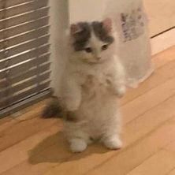

Sobre MIM! (e este projeto)
Olá! Chamo-me Ana Carolina Oliveira Pinto. Tenho 21 anos e estou no terceiro ano da Licenciatura em Ciências da Comunicação, no ramo de Multimédia. Este projeto foi desenvolvido no âmbito da unidade curricular de Fotojornalismo.
Como já referi, estou em Multimédia, como tal, tinha de dar flex às minhas capacidades de programção. Em parte esta piada é verdade, mas o que realmente me levou a fazer a programação do website foi a minha falta de capacidade para trabalhar com o Blogguer e o Wordpress. Recentemente também adquiri o GitHub Student Developer Pack, o que me permitiu ter acesso a um domínio gratuito por um ano, e ao GitHub CoPilot, que foi uma ajuda imensa na programção.
Tenho expectativas altas para esta cadeira, acho que tem um potencial tremendo. Adoro expressar a minha criatividade e explorar áreas que não conheço, e acho que esta UC me vai deixar fazer as duas. Para que isto pare de parecer um post do LinkedIn, acrescento que espero que algumas das futuras propostas de trabalho me deixem transpor o meu sentido de humor, porque, sem me querer gabar, eu sou a pessoa mais engraçada que eu conheço.
Sem nada mais a dizer, deixo-vos com o meu meme favorito:
